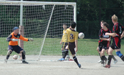
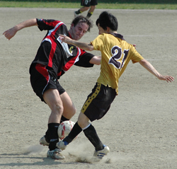
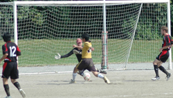
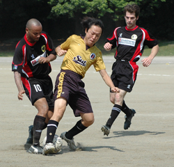

|
OiFuto dirty, Saturday 29th August
The honour of kicking off the new TML season went to international outfit IFG Pumas taking on Div 3 stalwarts, the Japanese Francophiles, Saint-United,
Wrongly labelled Sun United, it was apt that they open the season in a heatwave of almost 100 degrees F, with the Saints marching in as easy 3-1 winners against the ice-cream like Pumas.
The Pumas line up looked decent enough, a motley crue of top strikers, veteran bruisers and a Russian, but the 3-month lay saw them out of touch, the muscle memory suffering a bad case of amnesia.

Seeing the opposition to be as rusty as a Yamamba's chastity belt, the Japanese team merely used the space to draw out their eager but unfit opponents and exhausted them within about 20 minutes of the game. (Make note to self: on seeing Japanese players hiding in the shade until 1 minute before kick off, presume it is must be very, very hot). Despite having 16 players and lots of changes, the heat meant Pumas were relegated to a 10-second run then a 5-minute recovery period, and when we did make a break, the melting affected our senses.
"On paper, we should be winning this", said Panthers Nick, trying to pep us up but he must have been talking about toilet paper, or the Daily Sport, as on paper it was Sun United who were almost promoted last season, in fact beating the IFG A-team convincingly. They showed why: slick possession passing and great use of space.

Some players did well: Philipp has a solid debut, as did Andrew, who with some sprint training, will become the finished article, but they were left exposed at to the wing-backs running out of pep. Guiseppe made an instant impact, and Ian Warner got stuck into the tackles. The rest of all us can all play better, just need to get match fit.
Given the fact this was a new team against capable opponents, it wasn't too bad a result. In fact, better to have been given a wake up call early doors. We all need to get in shape, improve our touch, get used to each other.

So that's heat, rustiness, and lack of exercise. One final excuse: the ball - or sponge as it was. Even iron man, Dave, had trouble kicking it more than 30 yards. Seeing this was the opening game, and TML enforcing good rules like shinpads, bit silly there wasn't even a pump. So how about obeying other FIFA rules about having the proper specs for the match ball by each team having a pump... I've had more fun kicking autumn leaves in the gutter.
Overall, glad to get the season underway. I wager we will beat them next time round when we have found our feet. Let's get a win under our belts first. Next up, Kanto Celts 2nds.
Report by Kev Gray
|

 |